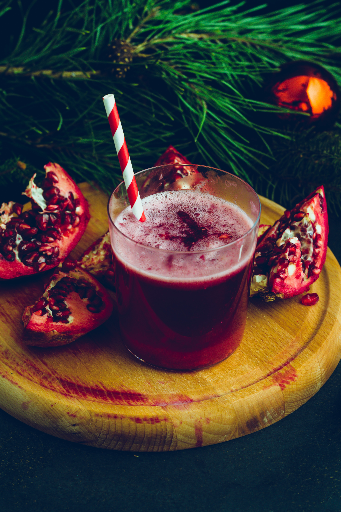
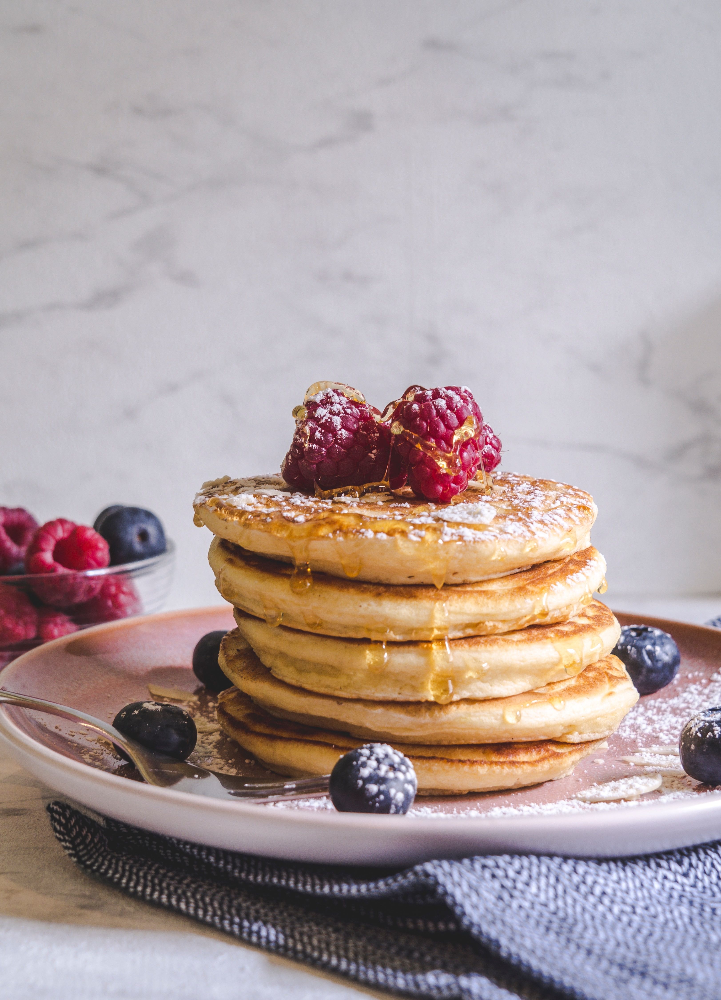
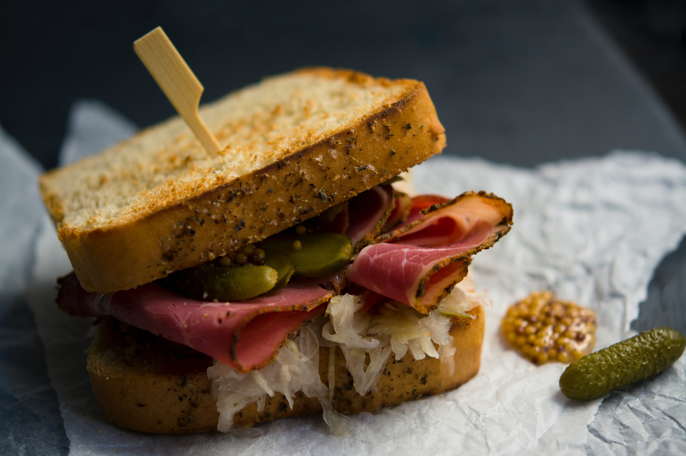
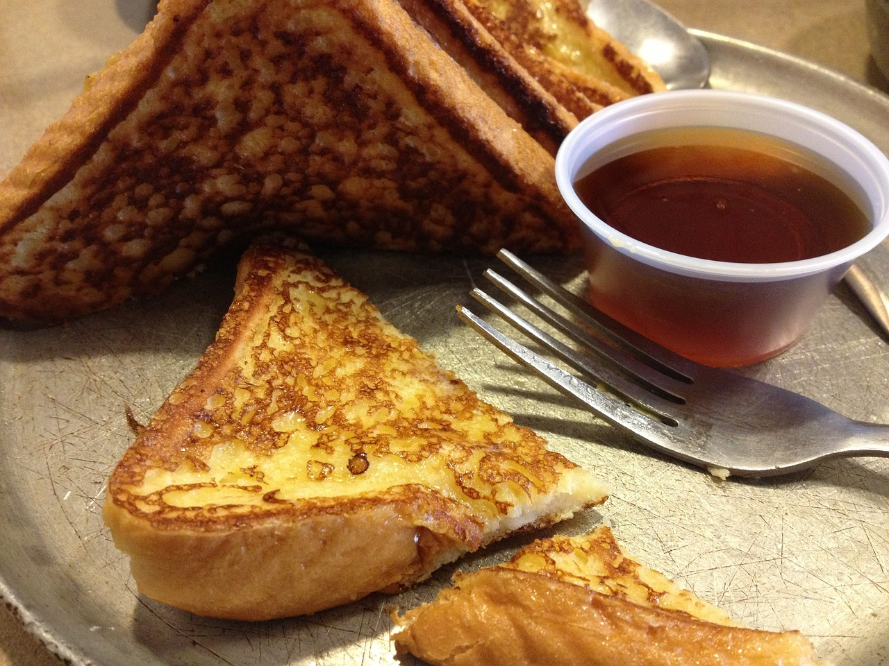
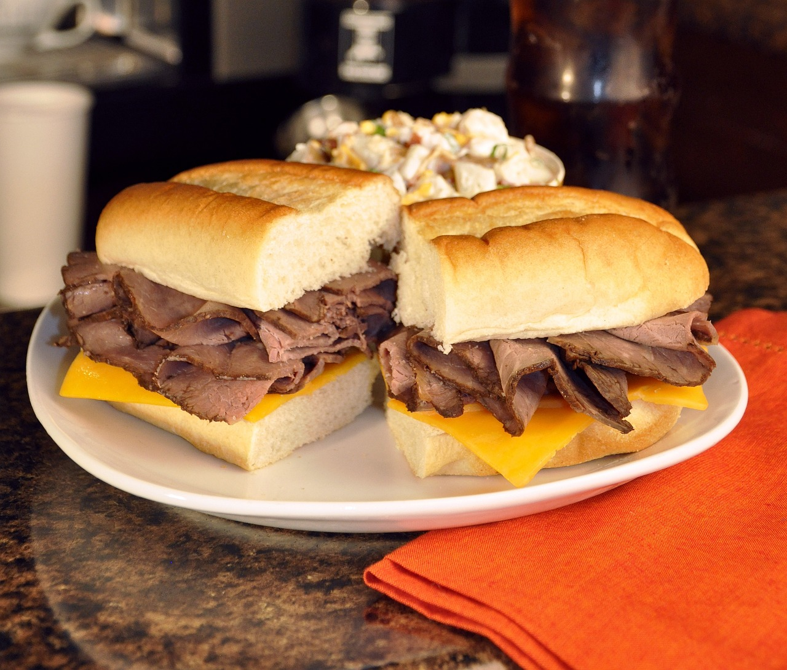
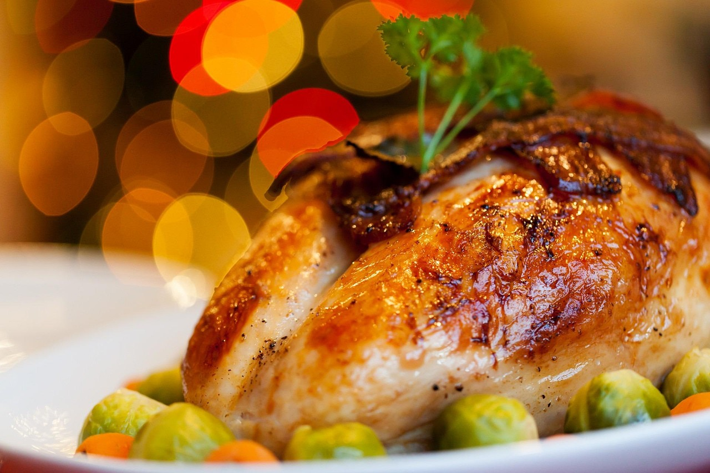

Our Apple Cider Fizz drink is refreshing and sugar-free. It can help stabilize your blood sugars, suppress your appetite and support your immune system. A favorite among our patrons.

Beverages
Pomegranate is a round shaped, red fruit with white flesh on the inside that is full of crunchy, juicy seeds called arils. Its juice has a high level of antioxidants present which are beneficial for our health. These antioxidants help in removing the free radicals in the body that damage our cells and lead to chronic health diseases like cancer.
Our Apple Cider Fizz drink is refreshing and sugar-free. It can help stabilize your blood sugars, suppress your appetite and support your immune system. A favorite among our patrons.
Sides
Complete any meal with a side of the classic French fries. Potatoes, the main ingredient, are a good source of potassium, vitamin C, and fiber. When fried, potatoes also provide some iron and protein. Our fries are garnished with Escallion and green peppers.

Steel cut oats are the least processed form of oat cereal and it's the standard for our porridge sides. This selection is choice if you're looking to reduce your fat, sugar and calorie intake and still feel full. It's also rich in minerals including iron, copper, and manganese, with iron benefiting your metabolism and aiding oxygen transport, copper helping maintain healthy bones, and manganese supporting blood sugar management. With a nutty flavour, this side is topped off with sliced bananas for a satisfying texture when taken in your mouth all at once.

$1 for each additional pancake
This selection is made with uncured, unprocessed, hand-picked Ham thins, as these are fresh and are more organic. We clean and prepare this choice meat and will cook it to standard or as you desire. Ham is high in protein but low in carbs, fat, and fiber. It's also low in calories when eaten alone. This offering has cheese and pickles included.
Main Dishes
This selection is made with uncured, unprocessed, hand-picked Ham thins, as these are fresh and are more organic. We clean and prepare this choice meat and will cook it to standard or as you desire. Ham is high in protein but low in carbs, fat, and fiber. It's also low in calories when eaten alone. This offering has cheese and pickles included.
French Toast from the other guys are usually high in calories due to the presence of refined carbs and too much sugar but Chef Ben revised the recipe to include whole grain bread and fresh fruit. He also ensured to reduce the amount of sugar, butter and cream while keeping it just as tasty - making our French Toast a slice above the rest!
Chef Ben's Bistro's spin on the cheesy and meaty goodness of the classic Pepperoni Pizza. A favorite among our patrons.

The roast beef sandwiches of Chef Ben's Bistro are juicy, cheesy, and loaded up with amazing flavors. Made with thinly sliced roast beef, vegetables (optional), and creamy horseradish sauce on our own mouth-watering, buttery bun baked in-house. Beef lovers, this is the sandwich for you!
Garnished with fresh herb sprigs and citrus wedges, this selection has all the good looks and moist flavor you dream of in an oven-roasted turkey. Enjoy Chef Ben's Bistro's rendition of a holiday staple everyone knows and loves.
